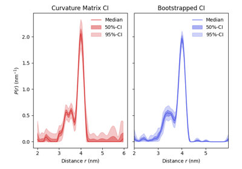
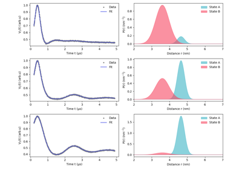

Advanced
These examples showcase deeper usage of DeerLab and the fitting of more complex and custom models.

Comparing confidence intervals for regularization results
Comparing confidence intervals for regularization results
Simulating orientation selection effects in dipolar signals
Simulating orientation selection effects in dipolar signals

Fitting Gaussians to a non-parametric distance distribution fit
Fitting Gaussians to a non-parametric distance distribution fit


Global fitting of a two-state model to a series of DEER traces
Global fitting of a two-state model to a series of DEER traces
Dipolar pathways model selection
Dipolar pathways model selection
Fit a polynomial force field to a dipolar signal
Fit a polynomial force field to a dipolar signal

Analyzing pseudo-titration (dose-response) curves with non-parametric distributions
Analyzing pseudo-titration (dose-response) curves with non-parametric distributions
Global analysis of 5-pulse DEER on a liquid-droplet protein system
Global analysis of 5-pulse DEER on a liquid-droplet protein system